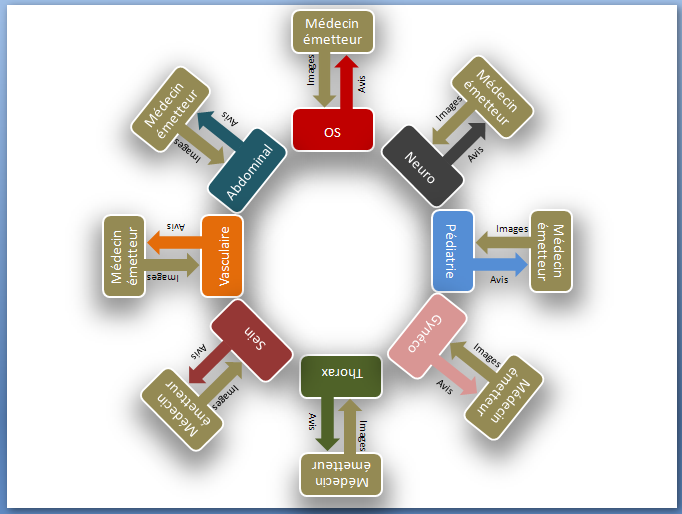

Fonctionnement du réseau
Téléradiologie Sans Frontières reposait sur un système de binôme, l’unité fonctionnelle du réseau collaboratif.
Le binôme lecteur–émetteur
Chaque binôme était composé de :
- Un lecteur — médecin radiologue expérimenté.
- Un émetteur — médecin, radiologue ou non, exerçant dans un pays en développement.
Les dossiers numérisés et un formulaire clinique étaient envoyés au lecteur via la plateforme.
- Le nombre d’examens et les délais de lecture étaient déterminés ensemble.
- Un contrôle multicentrique de la quantité et de la qualité des dossiers était en place.
- Les interactions humaines — respect, confiance, esprit confraternel — étaient encouragées.
Regroupement de binômes
Les radiologues bénévoles d’une même institution se regroupaient pour former un groupe de lecture couvrant l’ensemble des sub-spécialités. Par exemple les groupes « Hôpital Universitaire Erasme », « Ordre de Malte » et « Fondation pour la Radiologie ».
De même, des radiologues sub-spécialisés issus d’institutions différentes se regroupaient par discipline : « Radiopédiatrie », « Radiologie ostéo-articulaire », « Imagerie de la femme », « Imagerie thoraco-abdominale ».
Ces regroupements permettaient un soutien mutuel et le partage d’expertise sur les dossiers complexes.
Plateforme professionnelle sécurisée
La plateforme de TSF proposait une solution compatible avec tout ordinateur disposant d’une connexion Internet, offrant une alternative sécurisée à l’envoi d’images par e-mail, encore répandu à l’époque.
- Transmission sécurisée et anonymisation des dossiers radiologiques
- Stockage des images au format DICOM
- Viewer DICOM diagnostique marqué CE médical et approuvé FDA
- Comptes rendus liés au dossier
